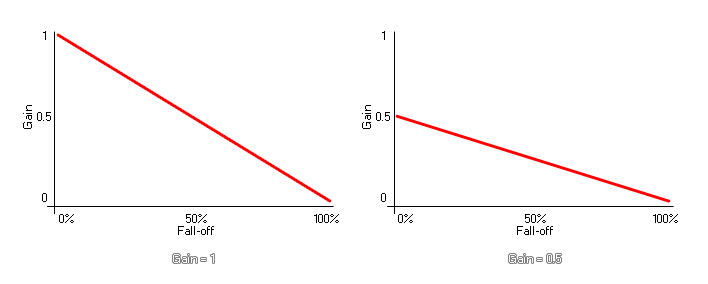

audio_emitter_gain
Changes the maximum gain (volume) for an emitter.
Syntax :
audio_emitter_gain(emitter, gain);
| Argument | Description |
|---|---|
| emitter | The index of the emitter to change. |
| gain | The maximum gain (default 1). |
Returns : N/A
Description
This function sets the maximum gain (volume) for the sound. The perceived volume for a sound can change depending on the fall-off value and the position it has
relative to the listener, but by setting the gain with this function, the full volume will never exceed the specified gain value. The image below illustrates how gain affects the volume of the emitter
when fall-off is greater than 0:

This function will change the volume of the sound while it is being played as well all subsequent sounds played through the given emitter.
NOTE : the final volume will also be influenced by the global audio gain that has been set by the function audio_master_gain.
Example :
if up
{
gain += 0.05;
if gain >= 1 up = false;
}
else
{
gain += 0.05;
if gain <= 0 up = true;
}
audio_emitter_gain(s_emit, gain);
The above code sets the variable "gain" to different values and then uses that same variable to set the gain of the emitter indexed in the variable "s_emit".